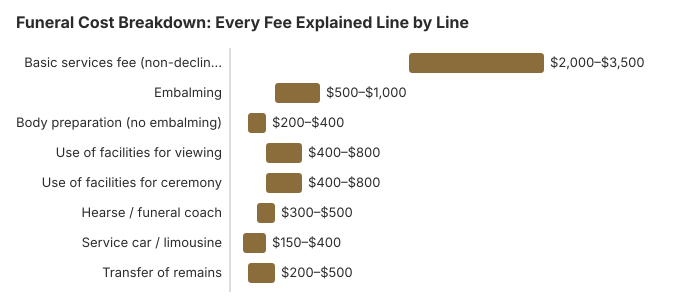

Funeral Cost Breakdown: Every Fee Explained Line by Line
How we calculate these costs
This breakdown uses itemized fee data from the NFDA 2023 General Price List Study, cross-checked against locally-filed General Price Lists required under the FTC Funeral Rule (16 CFR Part 453), and forward-projected with the BLS Consumer Price Index: Funeral Services (CUUR0000SEGD02). Cremation-specific line items reflect the CANA (Cremation Association of North America) 2024 Annual Report.
When a loved one dies, the financial side of funeral planning can feel overwhelming. Funeral bills often arrive as a single large number, and many families never see the individual charges until it is too late to ask questions. This guide breaks down every common funeral expense line by line, with realistic 2026 price ranges, so you can understand exactly what you are paying for. Whether you are planning ahead or making arrangements right now, knowing these costs gives you the clarity and confidence to make decisions that honor your loved one without unnecessary financial stress.
Funeral Home Service Fees
Every funeral home charges a set of professional service fees. The basic services fee is the one charge you cannot decline; it covers the funeral director's expertise, coordination of all arrangements, securing permits, filing the death certificate, and general business overhead. Per the NFDA 2023 General Price List Study, the national median non-declinable basic services fee is $2,495. Beyond that fee, every other service should be optional and itemized on the General Price List (GPL) the funeral home is legally required to provide under the FTC Funeral Rule (16 CFR Part 453).
| Service | Typical Cost Range | Notes |
|---|---|---|
| Basic services fee (non-declinable) | $2,000 – $3,500 | Covers funeral director, coordination, permits, overhead |
| Embalming | $500 – $1,000 | Not legally required in most states; ask about alternatives |
| Body preparation (no embalming) | $200 – $400 | Washing, dressing, cosmetology without chemical preservation |
| Use of facilities for viewing | $400 – $800 | Per-day charge for visitation or wake |
| Use of facilities for ceremony | $400 – $800 | Funeral or memorial service held at the funeral home |
| Hearse / funeral coach | $300 – $500 | Transports the casket from the funeral home to the cemetery |
| Service car / limousine | $150 – $400 | Optional vehicle for immediate family |
| Transfer of remains | $200 – $500 | Moving the deceased from the place of death to the funeral home |

The basic services fee alone accounts for a significant portion of the final bill. Because it is non-declinable, it is worth comparing this fee across two or three funeral homes before committing. A difference of even $500 here saves real money without affecting the quality of care your loved one receives.
Casket and Container Costs
For families choosing a traditional burial, the casket is typically the single largest line item on the invoice. Funeral homes often display their most expensive models at eye level in the showroom, but you are never obligated to buy from them. Under the FTC Funeral Rule, you can purchase a casket from any third-party retailer, including online stores and warehouse clubs, and the funeral home must accept it without charging a handling fee.
| Container Type | Typical Cost Range | Notes |
|---|---|---|
| Metal casket (steel, bronze, copper) | $2,000 – $10,000+ | Most common for traditional burial; wide price range by gauge and finish |
| Wood casket (hardwood, veneer, pine) | $1,000 – $5,000 | Ranges from simple pine to polished mahogany or cherry |
| Rental casket (for viewing before cremation) | $800 – $2,000 | Allows a dignified viewing without the full purchase cost |
| Cremation container (cardboard, pressed wood) | $50 – $400 | Simple combustible container required by most crematories |
Choosing a mid-range wood casket instead of a premium metal model can save $3,000 to $7,000 or more. If cremation follows a viewing, renting a casket is a practical and dignified alternative that many families find saves thousands.
Cemetery Costs
Cemetery fees are separate from the funeral home charges and can catch families off guard. These costs cover the land, the labor to open and close the grave, the outer container required by most cemeteries, and the permanent memorial marker. Some cemeteries bundle a perpetual care fee into the plot price, while others list it as a separate charge.
| Cemetery Expense | Typical Cost Range | Notes |
|---|---|---|
| Cemetery plot | $1,000 – $4,000+ | Urban plots cost more; companion plots for two are available |
| Opening and closing the grave | $500 – $1,500 | Weekend and holiday services often carry a surcharge of $200–$500 |
| Burial vault or grave liner | $1,000 – $3,000 | Required by most cemeteries to prevent ground settling |
| Headstone or grave marker | $1,000 – $3,000+ | Flat markers are less expensive; custom engraving adds cost |
| Perpetual care fee | Included or $200 – $500 | Funds ongoing grounds maintenance at the cemetery |
Cemetery expenses alone can total $3,700 to $12,000 or more. Families who already own a plot may save substantially. If you do not yet have a plot, comparing prices at two or three cemeteries in your area is one of the most impactful ways to reduce the total cost of a burial.
Cremation-Specific Costs
For families choosing cremation, the cost structure is generally simpler and lower overall. The major line items are the cremation process fee, the urn, and, if you want a permanent resting place, a columbarium niche. Many cremation families skip the niche entirely and keep the urn at home, scatter ashes in a meaningful location, or bury the urn in a cemetery plot at a fraction of the cost of a full burial.
| Cremation Expense | Typical Cost Range | Notes |
|---|---|---|
| Cremation fee (crematory charge) | $200 – $800 | The actual cost of the cremation process itself |
| Urn | $50 – $3,000+ | Simple containers start under $50; decorative urns cost more |
| Columbarium niche | $750 – $3,000+ | A permanent space to display the urn in a cemetery or mausoleum |
The cremation fee is set by the crematory, not the funeral home, so it can sometimes be negotiated by choosing a different cremation provider. Ask your funeral home whether they operate their own crematory or outsource to a third party, as this can affect the price.
Additional Expenses
Beyond the core funeral home, casket, and cemetery charges, several additional items appear on most funeral invoices. These are often listed as cash-advance items: expenses the funeral home pays to third-party vendors on your behalf. Some funeral homes add a service fee or markup to these items, so it is worth asking whether prices reflect the actual third-party cost or include a handling charge.
| Item | Typical Cost Range | Notes |
|---|---|---|
| Obituary notice | $200 – $1,000 | Newspaper obituaries are priced by length; online notices may be free |
| Death certificates (certified copies) | $10 – $25 each | Most families need 5–15 copies for insurance, banks, and legal matters |
| Flowers and floral arrangements | $200 – $600 | Casket spray, standing sprays, and table arrangements |
| Printed programs or memorial cards | $100 – $300 | Often sold in sets of 50–200; custom design increases the price |
| Music (organist, soloist, or audio system) | $100 – $500 | Live musicians cost more than recorded music playback |
These extras add up quickly. A newspaper obituary in a major metropolitan paper can alone cost $500 or more. Families can save by writing their own obituary, using free online memorial pages, ordering flowers through a local florist rather than the funeral home, and printing programs at home or through an office supply store.
Total Cost Examples
Looking at line items individually is helpful, but it can be hard to picture the full total. Here are three common scenarios with estimated totals based on the ranges above. Your actual costs will depend on your location, provider, and the choices you make.
Scenario 1: Traditional Funeral with Viewing and Burial
- Basic services fee: $2,495
- Embalming: $750
- Use of facilities (viewing + ceremony): $1,200
- Hearse: $350
- Transfer of remains: $350
- Metal casket (mid-range): $3,500
- Cemetery plot: $2,000
- Opening and closing: $1,000
- Burial vault: $1,500
- Headstone: $1,500
- Obituary, flowers, programs, death certificates: $800
Estimated total: $15,445
Scenario 2: Cremation with Memorial Service
- Body preparation (no embalming): $300
- Use of facilities for ceremony: $500
- Cremation fee: $400
- Cremation container: $150
- Urn (mid-range): $250
- Obituary, flowers, programs, death certificates: $600
Estimated total: $5,050
Scenario 3: Direct Cremation
- Basic services fee (reduced for direct cremation): $1,500
- Transfer of remains: $300
- Cremation fee: $350
- Cremation container: $75
- Death certificates (5 copies): $100
Estimated total: $2,325
The difference between the most expensive and most affordable option is roughly $13,000. That gap is not about the quality of love or respect you show; it is about the specific goods and services you choose. Every one of these scenarios can provide a meaningful, dignified farewell.
How to Read a Funeral Home Price List
The General Price List (GPL) is the most important document you will receive from a funeral home. The FTC Funeral Rule requires every funeral provider to give you this itemized list before you discuss arrangements. Here is how to read it effectively:
- Look for the basic services fee first. This is the non-declinable charge that appears on every invoice. It is the foundation of the bill, and it varies significantly between providers; comparing this number across two or three funeral homes can save you hundreds of dollars immediately.
- Separate the funeral home charges from third-party costs. The GPL should clearly distinguish the funeral home's own fees from cash-advance items like obituary notices, flowers, and certified death certificates. Cash-advance items may include a markup.
- Check for package pricing versus itemized pricing. Some funeral homes offer package deals that bundle common services. Packages can be a good value, but they sometimes include items you do not need. Always compare the package price to the sum of only the individual items you want.
- Watch for vague line items. If you see a charge labeled "miscellaneous," "handling," or "administrative fee" without a clear description, ask what it covers. You have every right to request a detailed explanation of any charge.
- Note what is not on the list. Cemetery fees, headstones, and some third-party costs may not appear on the funeral home's GPL because they are billed by separate companies. Make sure you account for all expenses, not just the ones the funeral home presents.
- Ask about price guarantees. Some GPLs include a disclaimer that prices are subject to change. If you are planning ahead, ask whether the quoted prices will be honored at the time of need or if they may increase.
You can request a GPL in person, over the phone, or sometimes by email. You do not need to provide your name, explain your situation, or commit to any services. Treat the GPL like a menu; it exists so you can choose only what you want.
Where Families Can Save the Most
Not every line item offers the same opportunity for savings. Here are the areas where your choices have the biggest financial impact:
- The casket. This is the single biggest cost driver in a traditional burial. Buying the casket from a third-party seller is another option; the funeral home must accept it and cannot charge a handling fee. Buying from a third-party retailer, online or at a warehouse club, often saves 40 to 50 percent compared to funeral home pricing. If cremation follows a viewing, renting a casket saves thousands more.
- Cemetery selection. Prices for plots, vaults, and opening-and-closing fees vary dramatically between cemeteries, even within the same city. Municipal and religious cemeteries are often less expensive than private, for-profit cemeteries. Veterans may qualify for free burial in a national cemetery.
- Choosing cremation over burial. Cremation eliminates the cost of a casket, cemetery plot, vault, headstone, and grave-opening fees. Even a cremation with a full memorial service typically costs $5,000 to $7,000 less than a comparable burial.
- Skipping embalming. If your state does not require it and you are not having an open-casket viewing, opting out of embalming saves $500 to $1,000. Refrigeration is a suitable alternative that most funeral homes can provide.
- Handling extras yourself. Writing the obituary yourself, ordering flowers through a local florist, printing programs at home, and submitting death certificate requests directly to your county clerk can save hundreds of dollars in markup fees.
- Comparing providers. Simply calling two or three funeral homes for their GPL and comparing line-by-line is the single most effective step a family can take. Price differences of 30 to 50 percent between providers in the same area are not uncommon.
Saving money on a funeral does not mean sacrificing dignity. It means spending thoughtfully on the things that matter most to your family and declining the things that do not. There is no shame in asking questions, comparing prices, or choosing simplicity.
Frequently Asked Questions
What is the basic services fee at a funeral home?
The basic services fee is a non-declinable charge that covers the funeral director's professional services, including coordinating arrangements, handling paperwork such as death certificates and permits, and general overhead. It typically ranges from $2,000 to $3,500 and appears on every funeral home invoice regardless of the services you select.
How much does embalming cost?
Embalming typically costs between $500 and $1,000. It is not legally required in most states, though some funeral homes require it for open-casket viewings. If you prefer not to embalm, ask about refrigeration or dry ice as alternatives, which usually cost $200 to $400 for body preparation.
What is the most expensive part of a funeral?
For most families, the casket is the single most expensive item, ranging from $2,000 to $10,000 or more for metal models. When you add cemetery costs (including the plot, vault, opening and closing fee, and headstone) the burial-related expenses often exceed the casket cost and can total $3,500 to $11,500 or more.
How much does a cemetery plot cost?
Cemetery plots typically cost between $1,000 and $4,000 or more, depending on location, cemetery type, and whether it is a single or companion plot. Urban cemeteries and those in high-cost-of-living areas tend to charge significantly more. Some cemeteries also charge a separate perpetual care fee of $200 to $500.
What is a burial vault and is it required?
A burial vault or grave liner is an outer container placed in the grave to support the ground above the casket and prevent the surface from sinking over time. Most cemeteries require one, though it is not a state law in most places. A basic grave liner costs around $1,000, while a sealed burial vault can range from $1,500 to $3,000 or more.
How much does a direct cremation cost compared to a traditional funeral?
Direct cremation is the most affordable option, at a 2023 national median of $2,645 according to NFDA and about $1,400 to $3,000 across our state estimates. A traditional funeral with viewing and burial has an NFDA 2023 median of $8,300, or $9,995 with a vault, and the cemetery plot, grave opening fee, and headstone are billed separately. The difference is largely driven by the casket, cemetery fees, and embalming costs that direct cremation eliminates.
Are funeral homes required to show me an itemized price list?
Yes. Under the FTC Funeral Rule, every funeral home must provide a General Price List (GPL) to anyone who asks, whether in person or over the phone. The GPL must itemize every service and product the funeral home offers along with its price. You do not need to provide your name, and you cannot be required to purchase a bundled package.
What are cash-advance items on a funeral bill?
Cash-advance items are goods and services that the funeral home arranges on your behalf through third-party vendors. Common examples include obituary notices, flowers, death certificates, clergy honoraria, and musician fees. The funeral home may add a service charge for handling these arrangements, so always ask whether any markup is included.
Can I buy a casket from somewhere other than the funeral home?
Yes. The FTC Funeral Rule gives you the right to purchase a casket from any retailer (including online stores, warehouse clubs, and independent casket dealers), and the funeral home must accept it without charging a handling fee. Third-party caskets are often 40 to 50 percent less expensive than those sold by funeral homes.
What is the total cost of a funeral with cremation?
A funeral with a ceremony followed by cremation typically costs between $5,000 and $9,000. This generally includes the basic services fee, transportation, use of facilities for a memorial service, the cremation fee itself, and an urn. Adding a viewing with casket rental, flowers, and printed programs can push the total toward $8,000 to $10,000 or more depending on location.
How much does a headstone or grave marker cost?
Headstone and grave marker costs vary widely based on type and material. A flat granite marker typically costs $400 to $1,500, while an upright granite headstone ranges from $1,000 to $3,000 nationally. Bronze markers run $800 to $2,500, and large custom monuments can cost $5,000 to $15,000 or more. Many families do not realize this cost is separate from the cemetery plot fee, so be sure to budget for it when planning a burial.
What funeral costs are negotiable?
While the basic services fee is non-declinable at most funeral homes, many other costs are negotiable or optional. You can shop for a less expensive casket from an outside retailer, decline embalming in most cases, skip extras like flower arrangements and printed programs, and choose a simpler venue. Transportation fees, facility use charges, and package pricing may also have some flexibility. The most effective negotiating tool is comparing General Price Lists from multiple funeral homes.
Related Guides
Continue your research with these companion guides that cover specific topics in greater detail:
- Funeral Costs by State: See how average funeral prices vary across all 50 states and regions.
- Cremation vs. Burial Cost: A side-by-side comparison to help you weigh both options.
- Questions to Ask a Funeral Home: An essential checklist to bring before committing to any provider.
- What Funeral Homes Don't Tell You: Hidden fees, upsells, and industry practices every family should know.
- Affordable Funeral Options: Dignified ways to honor a loved one on a limited budget.
- Infant & Child Funeral Costs: Understanding the costs and options when a family faces the loss of a child.
Resources That May Help
- Funeral Consumers AllianceIndependent consumer advocacy for funeral rights
- Parting.comCompare funeral home prices in your area
- Funeral Insurance GuideCompare final expense and burial insurance options
- Payment Assistance GuideGovernment programs and financial help for funeral costs
Sources & review: Line-item figures on this page draw on the NFDA 2023 General Price List Study, the NFDA 2024 Cremation & Burial Report, the CANA (Cremation Association of North America) 2024 Annual Report, the BLS Consumer Price Index: Funeral Services (CUUR0000SEGD02), CDC NCHS mortality data, the FTC Funeral Rule (16 CFR Part 453), the Funeral Consumers Alliance, the VA burial allowance (38 CFR § 3.1600) and the SSA lump-sum death payment (section 202(i) of the Social Security Act). Paul Paradis, Founder & Editor, reviewed this cost breakdown on October 24, 2026; the national figures were updated October 2, 2026. Corrections: contact@funeralcostanalyzer.com.
Disclaimer: Information only, not professional advice. Full disclaimer.